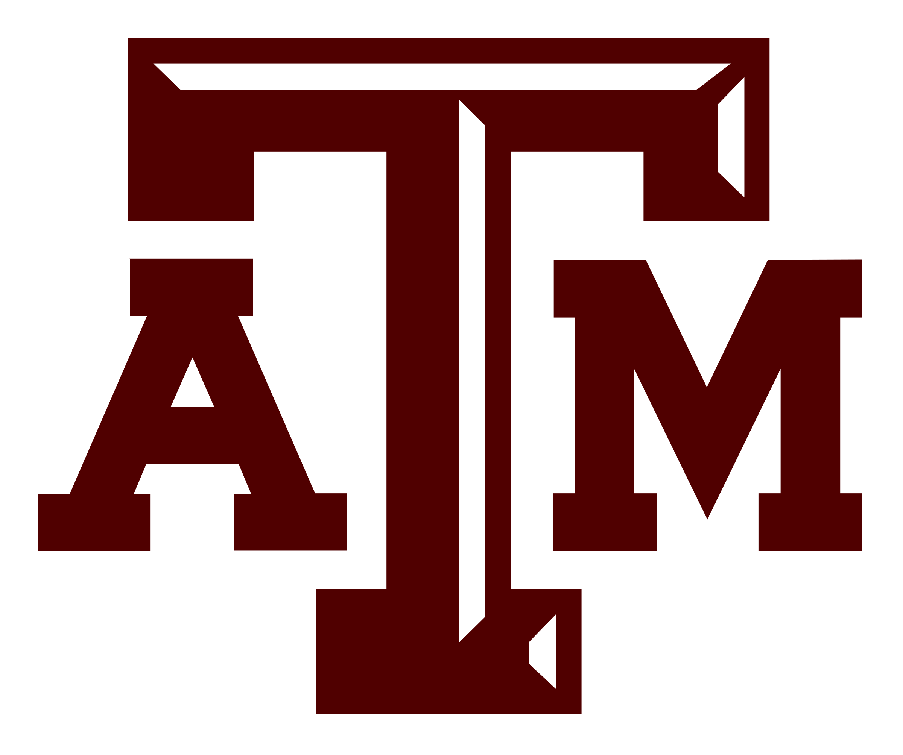
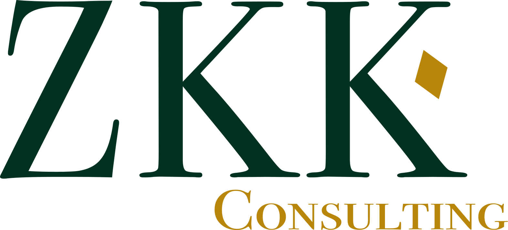

Master of Engineering in Biomedical Engineering
Texas A&M University
Graduate coursework and guided research in medical device design, biomaterials, clinical engineering, and remote patient monitoring.
M.Eng. researcher at Texas A&M University with a background in finance.
I work where clinical engineering meets commercial strategy: evaluating medical devices for both technical feasibility and market viability, and building the research and financial models that support the decision either way.



I hold a B.S. in Finance from UT Dallas and am completing a Master of Engineering in Biomedical Engineering at Texas A&M University (expected May 2027) — an accelerated path that began when I started college at 14.
That combination is the whole point. Most people evaluating a medical device can read either the engineering or the market, not both. I can move between a sterilization cycle and a five-year revenue model in the same conversation, which means a device gets assessed for whether it works and whether it can reach the patients it was built for.
Today I split my time between graduate research at Texas A&M, medical device and healthcare software internships, and running market and financial analysis as founder of ZKK Consulting LLC.
Graduate coursework and guided research in medical device design, biomaterials, clinical engineering, and remote patient monitoring.
Naveen Jindal School of Management. Coursework and capstone work in corporate finance, valuation, financial modeling, and competitive strategy.
Device-focused research spanning materials, wearable sensing, and remote patient monitoring — each project paired with the clinical and commercial case for the device.
Analyzed market drivers and sterilization impact for a specific surgical device, including competitive landscape and clinical engineering considerations. Focused on identifying cost-effective materials that maintain integrity through multiple autoclave cycles.
Engineering solutions for patient monitoring and recovery engagement, assessing clinical need and feasibility of a biomedical device concept — including a non-invasive wearable sensor suite that tracks physiological markers.
Evaluated remote monitoring strategies and device solutions to improve outcomes and reduce in-person follow-up burden for post-transplant kidney patients using subcutaneous biosensors.
Researched biofilm formation on stainless steel with PEG-Gelatin coatings to improve biocompatibility and inform implantable device design, analyzing protein adsorption rates that inhibit bacterial colonization.
Let's start a
conversation.
Open to conversations about biomedical engineering research, medical device roles, and market analysis work. The fastest way to reach me is email.